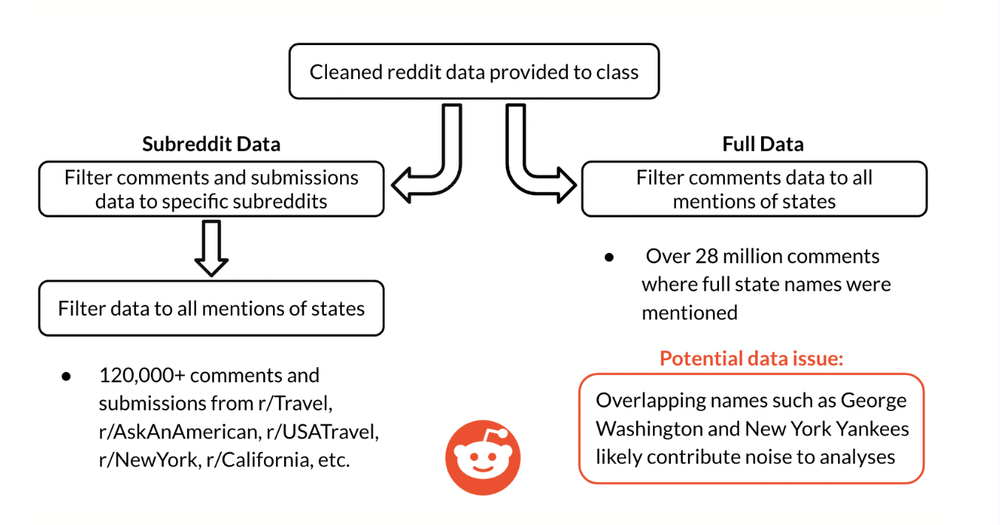
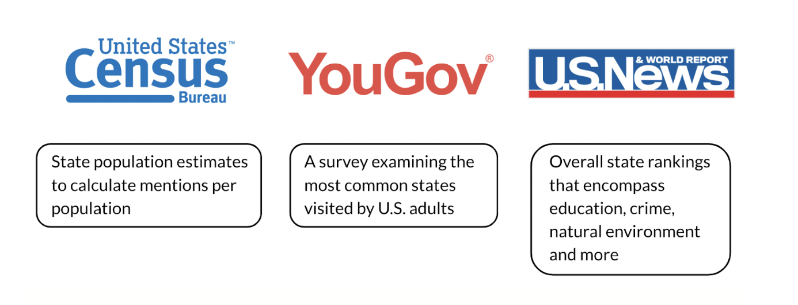

Analyzing U.S. State Sentiments on Reddit

Introduction
How do online conversations reflect our perceptions of U.S. states? During the brainstorming process for this project, our team noticed an absence of geography in the Reddit data. To add a spatial component, we decided to examine mentions of U.S. states and the sentiment of posts containing these mentions. Our project analyzes Reddit discussions to uncover insights about public opinion, trends, and key topics of interest for each state. Through sentiment analysis, trend discovery, and keyword extraction, we aim to understand the connection between online discourse and real-world perceptions.
Research Questions & Business Goals
Exploratory Data Analysis
- Examine state mentions over time to explore trends and correlations with news events.
- Determine the states that are talked about the most and least to discover which states generate the highest interest.
- Identify the subreddits where states are being mentioned the most.
- Explore the top authors that mention states.
- Analyze state mentions relative to population and examine how the mentions-per-population rank compares to other state rankings.
- Discover the states that are talked about most in state-specific subreddits and identify the state-specific subreddits that are most insular.
Natural Language Processing
- Analyze state sentiment over time and how news events drive changes in sentiment.
- Examine the states with the highest and lowest sentiment.
- Analyze state sentiment in state-specific subreddits to determine universal or mixed state opinions.
- Explore how state sentiment aligns with popular state rankings on various factors including economy, healthcare, and education.
- Investigate the most popular words used in posts mentioning states.
Machine Learning
- Identify the most common topics discussed in state-mentioned posts.
- Predict the score of a post based on its text and mentions of states.
- Predict the state mentioned based on the text of a post.
Please see the EDA, NLP, or ML tabs for more information on the specific research objectives.
Data Collection
Our group decided to tackle the topic with two different cuts of Reddit data. We started with the cleaned Reddit data provided to the class, which included submissions and posts from June 2023 to July 2024.
To create the first cut of data, we selected specific subreddits where we believed states would be mentioned and opinions about states discussed. We limited the data to the following subreddits: r/Travel, r/AskAnAmerican, r/USATravel, as well as the 50 individual state subreddits (e.g., r/NewYork, r/California, r/Ohio). From these subreddits, we further filtered the data to include only submissions and comments where full state names were mentioned. This dataset (referred to as the Subreddit Data) contained over 120,000 submissions and posts where full state names were mentioned.
The second cut of data took a simpler and more universal approach. From the full dataset, we filtered for comments containing full state names. We decided to focus on comments, as they are more likely to contain opinions about states. After cleaning, this dataset (referred to as the Full Data) contained over 28 million comments mentioning full state names.
A potential data issue is the use of full state names. Posts regarding notable figures like George Washington or sports teams such as the New York Yankees may introduce noise into our analysis. This issue is discussed further in the Summary section.

External Data
We decided to use three different external data sources for our analysis:
While tracking mentions of states seemed essential, we thought it would be important to examine mentions of states relative to their population. To do this, we obtained state-level population estimates from the United States Census Bureau.
Next, we wanted to make comparisons between state mentions and how often a state had been visited (assuming more visits mean more mentions). For this, we used a YouGov survey of U.S. adults that examined the percentage of respondents who had visited a given state before.
Finally, we wanted to see how the mentions and sentiment of states compared with other perceptions and rankings of states. We decided to use the U.S. News & World Report Best State Rankings for this analysis. These rankings comprise a range of data to evaluate states on education, livability, health, and much more.

Data Quality Issues
Ensuring high data quality is essential for reliable insights. Here are the challenges we encountered and how we addressed them:
- Missing Data: Several posts lacked critical metadata such as timestamps or subreddit names.
- Irrelevant Mentions: Posts occasionally referenced states ambiguously (e.g., “Georgia” as a name vs. the state).
- Text Noise: Many posts contained irrelevant or low-quality text, such as excessive links, emojis, or advertisements.
- Sentiment Overlap: Sentiment analysis tools sometimes misclassified posts due to sarcasm or complex sentence structures.
- Inconsistent Formatting: User-generated content often featured inconsistent capitalization, punctuation, and spelling, complicating keyword extraction.
Proposed Solutions
- Filtering irrelevant posts and ambiguous mentions using regex and manual review.
- Imputing or discarding missing data based on its significance to the analysis.
- Cleaning and normalizing text using standard preprocessing techniques like lowercasing, stopword removal, and punctuation handling.
Appendix: Research Questions & Business Goals
Exploratory Data Analysis
Examine state mentions over time to explore trends and correlations with news events.
Technical Proposal:
The daily mentions of full state names will be calculated for the entire time period for each state. A smoothed and Z-scored 7-day rolling average of daily state mention counts will then be computed and plotted. States with abnormal peaks will also be investigated to see if major news stories occurred simultaneously. This analysis will be conducted using the Subreddit Data.
Determine the states that are talked about the most and least to discover what states have the highest interest.
Technical Proposal:
Reddit comments with mentions of full states and territories will be examined for the entire time period. A count of state mentions for each state will be calculated and plotted. This analysis will be conducted using the Full Data.
Figure out the subreddits where states are being mentioned the most.
Technical Proposal:
Reddit comments with mentions of full states and territories will be examined for the entire time period. A count of state mentions for each subreddit will be calculated and plotted/tabulated. The top 10 subreddits that mention states will be plotted. This analysis will be conducted using the Full Data.
Analyze state mentions relative to the state population and examine how the mention-per-population rank compares to other state rankings.
Technical Proposal:
The total mentions of full state names will be calculated for the entire time period for each state. Using external data, state mentions will be normalized to state population, and the state mention rank will be compared to external state ranks. This analysis will be conducted using the Subreddit Data.
Discover the states that are talked about most on state-specific subreddits in addition to the state-specific subreddits that are most insular.
Technical Proposal:
Reddit comments with mentions of full states and territories will be examined for the entire time period. State mentions in state-specific subreddits will be examined to explore how often state subreddits mention themselves in addition to other states. This analysis will be conducted using the Subreddit Data.
Natural Language Processing
Analyze state sentiment over time and how news events can drive changes in sentiment.
Technical Proposal:
Using daily posts that mention states, evaluate the sentiment of states over time. Evaluate sentiment by state with a pre-trained NLP model to categorize posts into positive, negative, or neutral. Calculate average daily sentiment for each state and smooth the results with a rolling average. Finally, examine major news events and changes to sentiment during the same time period. This analysis will be conducted using the Subreddit Data.
Examine the states with the highest and lowest sentiment.
Technical Proposal:
Using Reddit comments that mention states, evaluate the sentiment of states over the entire time period. Evaluate sentiment by state with a pre-trained NLP model to categorize posts into positive, negative, or neutral. Calculate average sentiment for each state and order states and territories by the sentiment score. This analysis will be conducted using the Full Data.
Examine state sentiment from state-specific subreddits to determine universal or mixed state opinions.
Technical Proposal:
Using posts that mention states in state-specific subreddits, evaluate the sentiment of states. Evaluate sentiment by state mentioned and subreddit with a pre-trained NLP model to categorize posts into positive, negative, or neutral. Calculate average sentiment for each state-subreddit combination to see opinions of other states across state-specific subreddits. This analysis will be conducted using the Subreddit Data.
Discover how state sentiment aligns with popular state rankings on a variety of factors including economy, healthcare, and education.
Technical Proposal:
Using Reddit comments that mention states, evaluate the sentiment of states over the entire time period. Evaluate sentiment by state with a pre-trained NLP model to categorize posts into positive, negative, or neutral. Calculate average sentiment for each state and order states and territories by the sentiment score. With this ranking of states, compare it to other external state rankings to examine correlations. This analysis will be conducted using the Full Data.
Explore the most popular words used on posts that mention states.
Technical Proposal:
Examine posts that mention full state names. From these posts, count the most popular words on posts to get a sense of key words associated with mentions of states. Visualize this with a word cloud. This analysis will be conducted using the Full Data.
Machine Learning
Examine the most commonly discussed topics across state-mentioned posts.
Technical Proposal:
Analyze posts that mention states to identify common topics using topic modeling techniques such as Latent Dirichlet Allocation (LDA). LDA is a statistical model that clusters words frequently appearing together, uncovering hidden topics within a dataset. By applying LDA to the text of posts mentioning states, we aim to extract overarching themes, such as tourism, politics, local events, or cultural identity.
The analysis involves:
- Preprocessing the text data by cleaning it (e.g., removing stop words, punctuation, and irrelevant text) and converting it into a suitable format for topic modeling (e.g., bag-of-words or TF-IDF matrix).
- Determining the optimal number of topics using methods like coherence score analysis to ensure quality topics.
- Running the LDA model to assign topics to each post and extract the most representative keywords for each topic.
- Interpreting topics by reviewing keywords within each cluster to understand the context of discussions.
- Visualizing the results using tools like topic distribution charts or interactive plots (e.g., pyLDAvis) to explore dominant themes in posts mentioning states.
This approach allows us to explore the diversity of conversations surrounding U.S. states on Reddit and identify patterns in the types of discussions associated with different states. For instance, one topic may focus on travel and tourism, another on politics, while others may emphasize cultural events or economic issues. These insights can reveal how users engage with state-specific topics and how perceptions vary across states.
Predict the score of a post based on the post text and the mentions of states.
Technical Proposal:
Train a supervised machine learning model to predict the upvote score of a post based on its text and mentions of states. Features will include text embeddings, sentiment, and state mentions. This analysis will be conducted using the Subreddit Data.
Predict the state mentioned based on the text of a post.
Technical Proposal:
Train a supervised machine learning model to predict the state mentioned in a post based on its text. Features will include text embeddings and other contextual features derived from the post. This analysis will be conducted using the Subreddit Data.